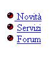

La colonna Codice HTML fa riferimento al codice dello sviluppatore.
La colonna Visuale fa riferimento a come viene mostrato da un browser (in questo caso IE 6.0).
La colonna Jaws - testuale mostra il testo letto da Jaws.
La colonna Jaws - vocale per ascoltare...
Osservazioni: la tabella è ancora in
fase di bozza. Indichiamo di seguito i possibili
miglioramenti:
| Codice HTML | Visuale | Jaws - testuale | Jaws - vocale |
|---|---|---|---|
<ul> <li>Verde</li> <li>Bianco</li> <li>Rosso</li> </ul> |
|
Lista di 3 elementi Punto elenco Verde Punto elenco Bianco Punto elenco Rosso fine lista |
file audio |
<ul> <br><a href="novita.html"> <img src="pallino.gif" width="13" height="13" border="0" alt="Pallino"> </a><a href="novita.html">Novità</a> <br><a href="servizi.html"><img src="pallino.gif" width="13" height="13" border="0" alt="Pallino"></a> <a href="Servizi.html">Servizi</a> <br><a href="Forum.html"><img src="pallino.gif" width="13" height="13" border="0" alt="Pallino"></a> <a href="Forum.html">Forum</a> </ul> |
 | Link pallino Link Novità Link pallino Link servizi Link pallino Link Forum |
file audio |
$Date: martedì 3 febbraio 2004 11.37 $ Luisa Marucci Barbara Leporini